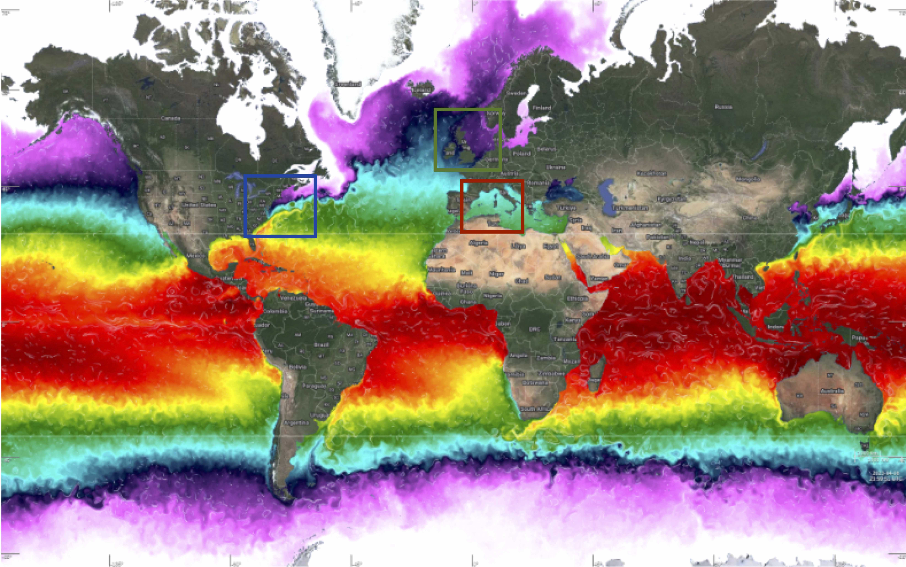

WOC-ESA Data challenges 
Get started
Installation
Download the data
Input specification
Products description
DC - Agulhas Current
Agulhas current setup
Overall comparison
DC - Gulf Stream
Gulf Stream setup
Overall comparison
DC - Mediterranean Sea
Mediterranean Sea setup
Overall comparison
Metrics details
Introduction
Eulerian scores
Spectral analysis
Lagrangian Diagnostics
Structure evaluations
WOC-ESA Data challenges
<no title>
View page source
mod_compare module
mod_filter module
mod_interp module
mod_plot module
mod_powerspec module
mod_read module
mod_spectral module
mod_stat module
mod_switchvar module
mod_traj module
mod_utils module
mod_xscale module